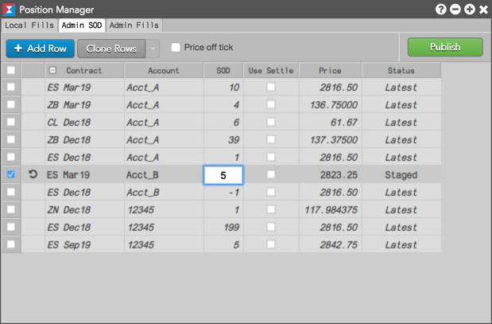

Note: The "Update positions" setting must be enabled for each account assigned to you in Setup in order to create or modify an SOD or that account. Also, only one SOD record can exist per account and contract.
A Start of Day (SOD) record for an account can be modified manually on a per contract basis.
To modify an SOD:

Note: You can also open Positions Manager by clicking Modify SOD from the context menu when selecting a contract in the Positions widget.
Tip: Click to clear the modifications without saving as needed.
The new SOD position is displayed in the Positions widget.